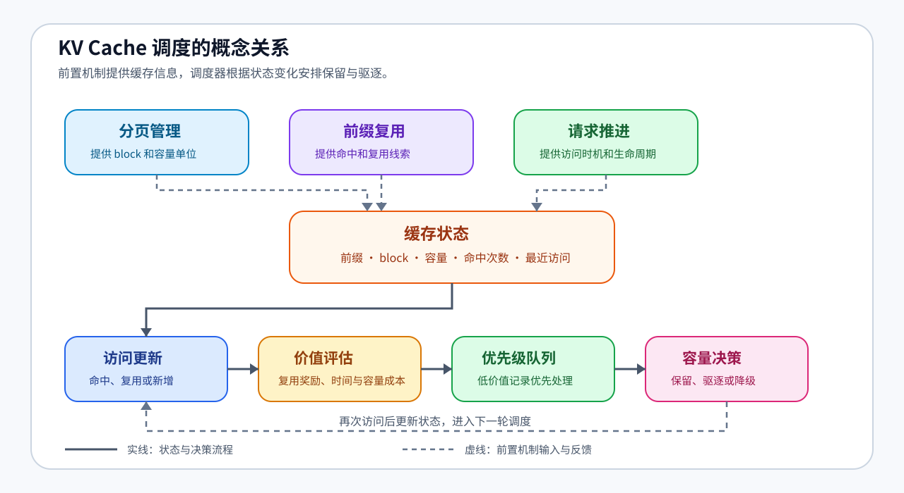
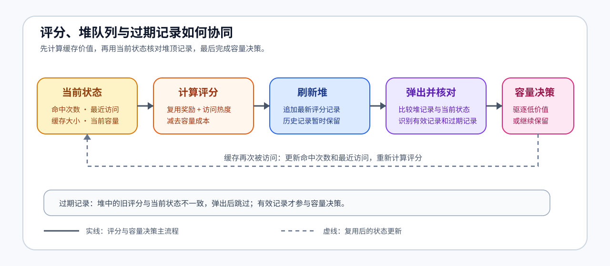

新版 Notebook 任务
打开本课 Notebook 官方版本
37. KV Cache Scheduling | KV Cache 调度
难度： Hard | 环境： CPU-first | 标签： 推理优化, KV Cache, 调度 | 目标人群： 推理优化学习者
本节导读
当多个请求共享前缀并持续生成时，KV Cache 会同时面临复用和容量压力。调度器需要记录每个缓存的大小、命中次数和最近访问时间，再根据这些状态决定缓存的保留顺序和驱逐顺序。
本节沿着“请求访问 → 缓存状态 → 价值评分 → 优先级队列 → 容量驱逐”的顺序理解 KV Cache 调度。重点是看清访问热度、缓存容量和驱逐顺序之间如何相互影响，并建立从状态变化到调度决策的完整认知链。
本节难度为 Hard，因为它需要同时理解缓存复用、容量约束、堆队列和状态更新之间的联系，并把这些机制组织成连续的调度过程。
关键词： KV Cache 调度、缓存复用、容量驱逐
当前题目检查清单
- TODO 1: 计算 cache entry 的保留优先级
- TODO 2: 把最新优先级写入堆队列
- TODO 3: 跳过堆中的过期记录
- TODO 4: 创建新的 cache entry
- TODO 5: 按优先级导出当前 cache 状态
展开官方原理、图解与任务要求
前置阅读
导语： 进入本节前，先能读出一个缓存块的容量、命中和最近访问状态，再观察这些状态如何影响保留与驱逐顺序。
Step 1: 为什么 KV Cache 需要调度
先把问题拆成三个容易观察的变化：哪些内容可以复用、每段缓存占用多少空间、哪些缓存最近更常被访问。前缀缓存提供复用线索，分页管理把 KV Cache 组织成可分配的 block，请求推进过程则不断更新访问热度。多个请求同时生成时，调度器要把这些信息合在一起，安排缓存的保留和驱逐。
| 观察入口 |
发生了什么 |
形成的调度依据 |
| 内容复用 |
同一前缀再次被访问 |
命中次数和复用价值 |
| 空间占用 |
新请求需要更多 KV Cache block |
当前容量和驱逐压力 |
| 访问热度 |
命中次数和最近访问不断变化 |
当前缓存价值和优先级 |

Step 2: 缓存状态与容量账本
先把每段可复用缓存看成一条状态记录，再把所有记录放进同一份容量账本。单条记录描述一个前缀的占用和访问历史，全局字段描述当前容量；这些信息共同为下一步的价值评估提供输入。
| 字段层级 |
记录什么 |
对调度的作用 |
| 单条缓存：标识 |
prefix 对应的缓存记录 |
判断访问是否命中同一前缀 |
| 单条缓存：大小 |
这段缓存占用多少字节 |
计算新增缓存带来的容量压力 |
| 单条缓存：命中次数 |
该前缀已经复用多少次 |
估计继续保留的复用价值 |
| 单条缓存：最近访问 |
最近一次访问发生的时间 |
反映当前访问热度 |
| 全局账本：容量 |
总容量和当前已分配容量 |
判断何时需要触发驱逐 |
Step 3: 评分、堆队列与过期记录
Step 2 的状态字段进入价值评估：复用次数体现未来命中机会，最近访问体现当前热度，缓存大小体现容量成本。教学实现把三者合成为一个可比较的保留分数，再交给优先级队列处理。评分可以写成：score = 复用奖励 + 最近访问奖励 - 容量惩罚。
| 机制 |
作用 |
设计时关注 |
| 评分 |
把缓存价值变成可比较的数字 |
复用、时间和容量共同影响分数 |
| 堆队列 |
让低优先级缓存可以先被找到 |
刷新时追加当前记录，保留可追溯状态 |
| 过期检查（stale check） |
弹出时重新核对当前 entry |
让驱逐依据跟随最新状态 |
| 驱逐 |
容量不足时释放低价值缓存 |
超过容量时选择驱逐或降级路径 |

Step 4: 动手实战
把前面的状态账本和评分机制落到代码中，再用访问事件复查缓存状态如何变化。表格列出每个实现位置的输入、动作和观察重点，完成后沿着“访问 → 评分 → 驱逐 → 快照”检查整条调度链。
| 实现位置 |
输入或状态 |
应完成的动作 |
测试时观察 |
_score |
命中次数、容量、最近访问 |
合成可比较的保留分数 |
复用多、访问近的缓存分数更高 |
_refresh_queue |
当前 entry |
追加最新的评分、时间和前缀 |
历史记录保留，等待弹出时核对 |
_evict_until_fit |
堆顶记录、当前 entry |
核对状态后释放所需容量 |
过期记录跳过，有效低分记录参与驱逐 |
touch / snapshot |
新旧前缀与当前状态 |
处理新增、复用并输出排序快照 |
snapshot 只展示状态，current_bytes 维持容量约束 |
测试
运行下面的测试单元，确认缓存评分、驱逐和快照输出都符合预期。
题目与测试代码 · Cell 5
@dataclass(order=True)
class CacheEntry:
priority: float
last_used: int
prefix: str = field(compare=False)
hits: int = field(default=0, compare=False)
bytes: int = field(default=0, compare=False)
class KVCacheSchedulerSim:
"""用优先级堆模拟可复用前缀的容量调度。"""
def __init__(self, capacity_bytes: int = 1024):
"""初始化容量账本、缓存状态和优先级队列。"""
if capacity_bytes <= 0:
raise ValueError('capacity_bytes must be positive')
self.capacity_bytes = capacity_bytes
self.current_bytes = 0
self.time = 0
self.entries: Dict[str, CacheEntry] = {}
self.queue: List[Tuple[float, int, str]] = []
self.log: List[str] = []
def _score(self, hits: int, size: int, last_used: int) -> float:
"""根据复用次数、访问热度和容量成本计算保留分数。"""
recency = 1.0 / (1.0 + max(self.time - last_used, 0))
reuse_bonus = float(hits)
size_penalty = size / max(self.capacity_bytes, 1)
# ==========================================
# TODO 1: 计算 cache entry 的保留优先级
# 提示: 复用次数越多越该保留，越新越该保留，越大越需要惩罚
# 可用变量: reuse_bonus、recency、size_penalty；结果应为 float
# ==========================================
# score = ???
return score
def _refresh_queue(self, prefix: str):
"""把当前 entry 的最新评分追加到优先级堆。"""
entry = self.entries[prefix]
entry.priority = self._score(entry.hits, entry.bytes, entry.last_used)
# ==========================================
# TODO 2: 把最新优先级写入堆队列
# 提示: 这里要弹出低 priority 的缓存，因此不要对 priority 取负
# queue_item 应包含 (priority, last_used, prefix) 三个字段
# ==========================================
# queue_item = ???
heapq.heappush(self.queue, queue_item)
def _evict_until_fit(self, needed: int):
"""在新增缓存前驱逐低价值 entry，直到容量可以容纳它。"""
while self.current_bytes + needed > self.capacity_bytes and self.entries:
while self.queue:
priority, last_used, prefix = heapq.heappop(self.queue)
entry = self.entries.get(prefix)
if entry is None:
continue
# ==========================================
# TODO 3: 跳过堆中的过期记录
# 提示: entry 的 priority 或 last_used 已变化时，旧堆项不再有效
# 可比较堆顶的 priority、last_used 与 entry 的当前字段
# ==========================================
# is_stale = ???
if is_stale:
continue
break
else:
entry = min(self.entries.values(), key=lambda e: (e.priority, e.last_used))
prefix = entry.prefix
self.current_bytes -= entry.bytes
self.entries.pop(prefix, None)
self.log.append(f"evict:{prefix}")
def touch(self, prefix: str, bytes_: int):
"""访问一个前缀，更新命中状态或创建新的缓存 entry。"""
if not isinstance(prefix, str) or not prefix:
raise ValueError('prefix must be a non-empty string')
if bytes_ <= 0:
raise ValueError('bytes_ must be positive')
if bytes_ > self.capacity_bytes:
raise ValueError("single cache entry exceeds capacity")
self.time += 1
if prefix in self.entries:
entry = self.entries[prefix]
entry.hits += 1
entry.last_used = self.time
self._refresh_queue(prefix)
self.log.append(f"reuse:{prefix}")
return
self._evict_until_fit(bytes_)
# ==========================================
# TODO 4: 创建新的 cache entry
# 提示: 新 entry 的 hits 从 1 开始，last_used 使用当前 time
# entry 需要保存 prefix、bytes_、当前 time，并先使用 0.0 作为初始 priority
# ==========================================
# entry = ???
self.entries[prefix] = entry
self.current_bytes += bytes_
self._refresh_queue(prefix)
self.log.append(f"add:{prefix}")
def schedule(self, requests: List[Tuple[str, int]]) -> List[str]:
"""按给定访问顺序处理前缀请求并返回事件日志。"""
for prefix, bytes_ in requests:
self.touch(prefix, bytes_)
return list(self.log)
def snapshot(self) -> List[Tuple[str, int, float, int]]:
"""按保留价值从高到低导出当前缓存状态。"""
# ==========================================
# TODO 5: 按优先级导出当前 cache 状态
# 提示: 高 priority 在前；priority 相同则按 last_used 和 prefix 稳定排序
# ordered_entries 应是 CacheEntry 列表，不能修改 self.entries
# ==========================================
# ordered_entries = ???
return [(e.prefix, e.bytes, round(e.priority, 4), e.hits) for e in ordered_entries]
题目与测试代码 · Cell 7
# 测试你的实现
def test_kv_cache_scheduler():
try:
def expect_value_error(action, label):
try:
action()
except ValueError:
return
raise AssertionError(f'{label} 应拒绝非法输入')
expect_value_error(lambda: KVCacheSchedulerSim(capacity_bytes=0), 'capacity_bytes=0')
sim = KVCacheSchedulerSim(capacity_bytes=128)
requests = [
('a', 40),
('b', 48),
('a', 40),
('c', 56),
('d', 48),
('a', 40),
]
log = sim.schedule(requests)
snap = sim.snapshot()
assert len(log) >= len(requests)
assert any(item.startswith('reuse:a') for item in log)
assert any(item.startswith('evict:') for item in log)
assert sim.current_bytes <= sim.capacity_bytes
assert isinstance(snap, list)
assert all(len(item) == 4 for item in snap)
priorities = [item[2] for item in snap]
assert priorities == sorted(priorities, reverse=True)
# 评分应体现三条机制：更多复用、更近访问和更小容量成本。
hot_score = sim._score(hits=3, size=16, last_used=sim.time)
cold_score = sim._score(hits=1, size=16, last_used=0)
small_score = sim._score(hits=1, size=16, last_used=sim.time)
large_score = sim._score(hits=1, size=64, last_used=sim.time)
assert hot_score > cold_score
assert small_score > large_score
# 同一前缀被访问后，旧堆记录必须被识别为 stale，而不是重复驱逐同一 entry。
stale_sim = KVCacheSchedulerSim(capacity_bytes=80)
stale_sim.touch('hot', 32)
stale_sim.touch('hot', 32)
assert len(stale_sim.queue) >= 2
stale_sim.touch('cold', 64)
assert stale_sim.current_bytes <= stale_sim.capacity_bytes
assert len(stale_sim.entries) == len(set(stale_sim.entries))
assert stale_sim.current_bytes == sum(item.bytes for item in stale_sim.entries.values())
# 输入校验属于容量账本的边界条件，不应被宽泛异常处理吞掉。
expect_value_error(lambda: sim.touch('', 8), '空 prefix')
expect_value_error(lambda: sim.touch('bad-size', 0), '非正 bytes')
expect_value_error(lambda: sim.touch('too-large', 129), '超过容量的 entry')
print('✅ KVCacheSchedulerSim 测试通过')
except NotImplementedError as e:
raise NotImplementedError('请先完成 TODO 代码！') from e
except (NameError, AttributeError) as e:
raise NotImplementedError('请先完成 TODO 代码或检查字段名！') from e
test_kv_cache_scheduler()
本区由当前 Notebook 题目区生成。下面的精讲用于概念练习；回到 Notebook 时以本区的函数签名、TODO 和测试为准。参考答案及可选实验请在 Notebook 中查看。